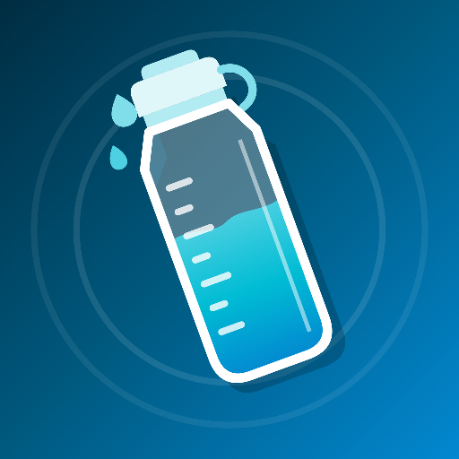

Fillmark
A lightweight, local-first, privacy-respecting drink and hydration tracker for Android with home screen widgets, waking-hours pacing, and optional Health Connect sync.

A lightweight, local-first, privacy-respecting drink and hydration tracker for Android with home screen widgets, waking-hours pacing, and optional Health Connect sync.